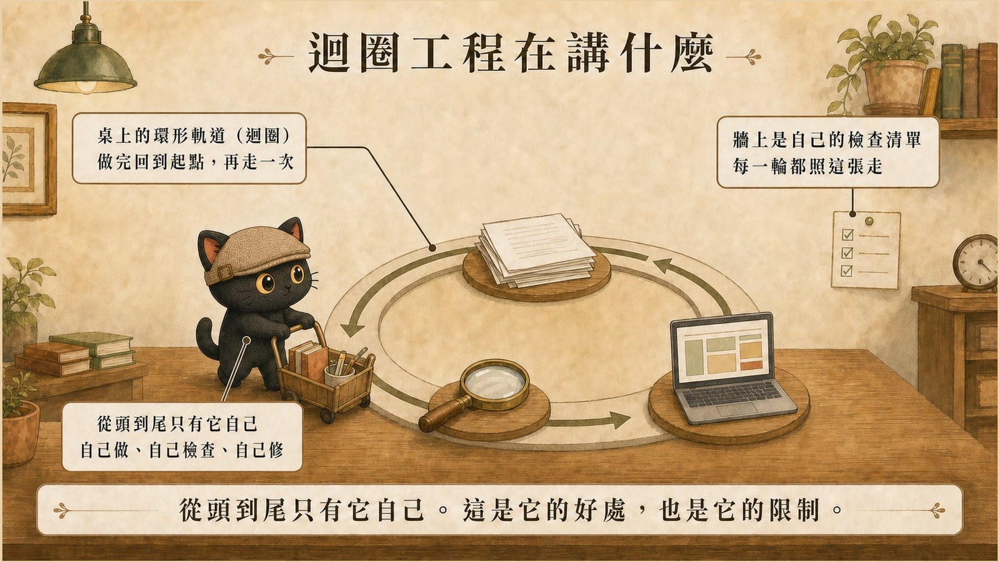
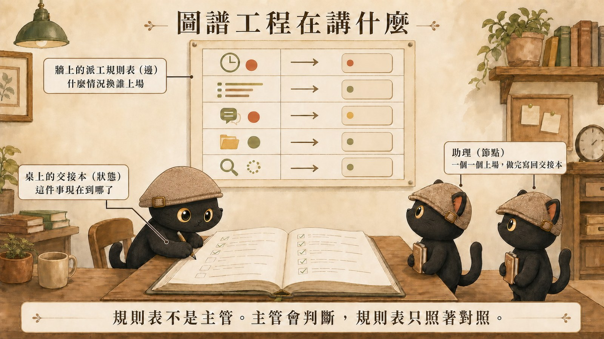

這篇在講什麼
工程師圈從七月開始在講「圖譜工程」。聽起來又是一個新名詞，但它的核心跟寫程式沒關係。這篇用一間辦公室把它講清楚，全程不用程式例子。講完之後處理兩件更重要的事：它跟哪些你已經知道的概念很像但其實不同，以及我自己那套機制裡，哪些真的算、哪些其實不算。第二件事我會誠實挑，符合的就說符合，不符合的就直說不算，不硬湊。
- 已經會讓 AI 自己跑完一件事，想知道再上去那層是什麼的人。
- 同時在做好幾種產出，覺得它們各做各的、串不起來的人。
- 看到「圖譜工程」到處被討論，想知道它跟自己有沒有關係的人。
- 一個辦公室場景，看完就記得住定義。
- 六個容易混淆的概念，每個都切開講清楚。
- 一份誠實的對照：什麼樣的東西算圖，什麼樣的不算。
- 一段可以直接複製的審查提示詞，今天就能用。
一、先講前一層：迴圈工程
圖譜工程是接在迴圈工程後面的一層。先花兩分鐘把前一層講完，後面會好懂很多。
迴圈工程，就是把「你一直在做的那個循環」交給一個會自己跑完的系統。
以前你要 AI 做一件事，是給它東西、看它回什麼、再叫它改、再看、再改。那個一圈一圈轉的角色是你自己在當。迴圈工程做的事，是把這個循環從你手上接走：它做完自己檢查，發現不對自己修，修完再檢查，直到過關才回來找你。

一個助理，一件事，自己反覆做到好。這就是迴圈。
- 用我寫一篇文章的工作流，講清楚什麼是迴圈工程
那篇用「我寫一篇文章」當案例整篇講透：一個迴圈的五個階段、最少要哪幾個零件、兩個真實案例、三個判斷它有沒有用的方法。這篇底下只講到「一個助理自己做完」這個程度，夠用來理解圖譜工程就好。
接下來的問題是：一個助理做得完一件事，那好幾件事、好幾個助理呢？這就是圖譜工程要處理的。
二、換一個場景：一間辦公室
想像一間辦公室，裡面有三樣東西。
桌子中間放著一本交接本。誰都看得到，上面寫著這件事現在的進展。
牆上貼著一張派工規則表。誰都看得到，上面寫著什麼情況下換誰上場。
助理們坐在旁邊等。一個一個上場，做完把結果寫進交接本，然後照規則表喊下一個人。這裡的「助理」是廣義的：可以是一個 AI、一支自動執行的小程式、一個工具，也可以是你自己。

這就是圖譜工程的全部。
三個容易看錯的地方
第一，規則表不是主管。主管會判斷、會裁量、會看情況通融。規則表只做條件對照，上面寫什麼就照什麼。
規則表上其實有兩種寫法，兩種都常見：
| 寫法 | 長什麼樣 | 什麼時候用 |
|---|---|---|
| 寫死順序 | 排版做完換校對，永遠一樣 | 步驟固定的流程 |
| 看狀況決定 | 看交接本，對外的送審查，內部的直接發 | 需要分岔的流程 |
還有第三種：讓 AI 讀完交接本自己決定下一個誰上。那確實比較像主管，有裁量空間。三種都可以，重點是你要知道自己用的是哪一種。
第二，助理不自己決定要不要插手。沒被喊到就不動。這點很重要，少了它就會滑成一群人各自為政，那正好是這套東西要解決的問題。
第三，可以同時開工，但那是規則表寫的。規則表可以寫「文字稿定稿之後，配圖跟排版同時開始」，兩邊做完各自寫回交接本，規則表再決定下一步。同時開工是被安排的，不是助理自己揪團。
三、這三樣東西的正式名字
| 辦公室裡的東西 | 正式名字 | 它在做什麼 |
|---|---|---|
| 桌上的交接本 | 狀態 | 記錄現在進行到哪、手上有什麼 |
| 牆上的派工規則表 | 邊 | 決定接下來輪到誰。可以寫死順序，也可以看交接本的狀況分岔 |
| 上場的助理 | 節點 | 做事的那一步，做完把結果寫回狀態 |
要精確一點的話，官方文件講的狀態是「這個應用當下的完整快照」，比「進度」大一些，做到什麼程度、手上有哪些東西都算在裡面。用交接本去想大致不會偏。
「邊」這個字最容易接錯
中文的「邊」很容易讀成邊界、界線、誰管到哪裡。這裡完全不是那個意思。
會特別提這件事，是因為我自己在跟人討論的時候真的接錯過。把邊理解成權責界線，整張圖就會被讀成組織分工圖，那是另一回事。
交接本上放什麼，不放什麼
放的是這件事的進展，還有做到現在手上有哪些東西。
不放的是各個助理自己的事：這個 AI 記得什麼、環境怎麼設定、用哪個模型。那些全部塞進共同的交接本，它會變成一個什麼都有、誰也看不懂的雜物櫃。
四、跟哪些概念容易混
圖譜工程跟好幾個你已經知道的東西長得很像，一個一個切開。
混淆一：知識圖譜
看到「圖譜」兩個字，多數人第一個想到的是知識圖譜。
| 知識圖譜 | 圖譜工程 | |
|---|---|---|
| 連起來的是 | 概念跟概念的關聯 | 工作跟工作的順序 |
| 你問它 | 這個題目牽涉到哪些東西 | 這件事做完之後輪到誰 |
| 成品長怎樣 | 一張可以瀏覽的關聯網 | 一條跑得動的流程 |
兩個都有節點跟連線，管的東西完全不同。我自己兩種都有，第四節會拿來對照。
混淆二：迴圈工程
第一節講過了，這裡放一張對照表方便回頭看。
| 迴圈工程 | 圖譜工程 | |
|---|---|---|
| 講的是 | 一件事自己跑完 | 好幾件事接得起來 |
| 做完的樣子 | AI 自己檢查、自己修，直到過關 | 各條線共用一份進度，誰等誰講清楚 |
| 辦公室裡的對應 | 一個助理自己把事情做到好 | 交接本加規則表，讓一群助理接得起來 |
這個分層是我用來理解的方式，方便記，不是嚴格的業界定義。實務上一張圖裡面也可以有迴圈，兩者不互斥。
- 用我寫一篇文章的工作流，講清楚什麼是迴圈工程
這篇的前一層。那篇用「寫一篇文章」當案例，同樣不用程式例子。
混淆三：專案管理
你可能會想：這不就是專案管理嗎？我看板本來就這樣用。
最關鍵的一個差別是：助理從人變成 AI 了。其他差別也有，但這個最直接影響你要怎麼寫。
傳統看板是給人看的。人看到卡片停在「待確認」，心裡會自己補上一句「喔對，我還沒給主管看過」。人有常識，會覺得這件事怪怪的先問一下，會記得上禮拜講過什麼。這些判斷從來沒有寫在看板上，它們在人的腦袋裡。
當你開始讓 AI 跑其中幾格，那些沒寫出來的判斷就跟著消失了。
| 助理是人 | 助理是 AI | |
|---|---|---|
| 完成條件 | 可以寫得模糊，人會自己補 | 要寫到不用猜 |
| 遇到怪事 | 多半會停下來問 | 多半照跑 |
| 誰等誰 | 大家心裡有數 | 沒寫就是沒有 |
| 出錯的速度 | 慢，中間有人會發現 | 快，而且一路跑到底 |
所以你原本的看板不用打掉重練，它已經是地基了。要補的是那些你一直放在腦袋裡、沒寫出來的判斷。
混淆四：互相監督
有些文章把圖譜工程講成「多個 AI 互相監督、互相修正」。
換一家 AI 來審確實很有用，理由第五節會講。但那是一種節點，串在邊的後面，跟「圖是什麼」是兩件事。把一種好用的節點當成整張圖，會讓人以為沒有互審就不算圖。
混淆五：自動化
「整條線更自動化」聽起來像圖譜工程，但自動化程度跟是不是一張圖沒有直接關係。
混淆六：狀態機、工作流編排
如果你做過流程設計，可能會覺得這些詞講的是同一件事。很大程度上確實是。
圖譜工程這個講法的重點在於：這張圖上跑的是 AI，而且它上面的節點自己也可能是一個會自己跑完的迴圈。至於「有狀態、有節點、有轉移條件」這個骨架，流程設計領域早就有了，這不是新發明。
五、我自己的機制裡，哪些真的算
這一節照一個原則寫：有就有，沒有就不要硬選。
把辦公室裡那三樣東西，對到我手上真實在跑的東西：
| 圖的元件 | 辦公室場景 | 我這邊真實存在的東西 |
|---|---|---|
| 狀態 | 桌上的交接本 | 各個看板的欄位、專案位置總表、施工中掛牌區、專案的現況快照檔 |
| 邊 | 牆上的派工規則表 | 33 個自動檢查程式（分成 5 種觸發時機）、部署前的六道關卡、發布前的十道檢查、同步分級規則 |
| 節點 | 上場的助理 | 各個技能包定義的角色、子代理、另一家公司的 AI、排程執行的任務 |
其中最標準的一個是官網文章看板：欄位是候選、排版中、待確認、待部署、已發布，每一格有明確的進入條件，沒到條件不准往下移。交接本、規則表、助理三樣都齊。
發布前的十道檢查是最嚴格的一段邊：索引重建、文章互聯、雙向連結、網站地圖、導覽列、內部連結、機密掃描、用字檢查、排隊狀態。前一關過才到下一關，任何一關沒過就整批停住。
不算的
這些是我原本以為算、後來想清楚不算的。
| 我手上的東西 | 為什麼不算 |
|---|---|
| 標籤連結法（整個知識庫用標籤把概念連起來） | 那是知識圖譜，管概念關聯，跟工作順序無關 |
| 整櫃的技能包 | 一櫃子工具本身沒有共用進度、也沒有規則表決定誰下一個上，那一櫃不是圖。（但單一個技能包被叫上場做事的時候，它就是在當節點。同一個東西，看你問的是哪個問題。） |
| 換一家公司的 AI 審稿 | 我很重視的一條規則，但它是節點的一種 |
| 規則分層 | 規則放哪裡的問題，跟流程編排是兩件事 |
| 寫單篇文章的流程 | 如果拆成明確的狀態與轉移條件，它也可以是一張小圖。我歸在迴圈工程，是因為我實際上沒那樣建 |
一個誠實的補充
上面「算的」那四項裡，看板跟十道檢查是真的有東西在執行轉移，沒到條件就是過不去。至於那四條內容線，比較準確的說法是「可以建成一張圖」：依賴關係我講得出來，共用素材也真的共用，但實際上的協調是我自己在腦袋裡做的，沒有一個系統在執行它。
我用的判斷方法
這是我自己的判斷法，不是什麼業界標準。問兩個問題：這裡面有沒有一份大家共用的紀錄，還有一張決定誰下一個上場的規則表？
兩個都有，它是圖。少一個，它可能很有用，但先不要叫它圖。
六、你的第一步
如果只做一件事，我建議做這個，因為它最便宜也最有感：你平常用哪個 AI 產出，就固定用另一家的 AI 審。
ChatGPT 寫的用 Claude 或 Gemini 審，反過來也一樣。重點是換公司，不是換對話視窗。
理由是我的假設：同一家的模型訓練來源接近，看不到的地方可能也接近。這個假設我沒有實測數據，但實際跑下來，換一家審確實抓到過好幾次同一家審不出來的東西。
舉一個這幾天真的發生的：我讓 AI 寫一段價格比較，年費算出來是 8,744 元，月費寫的是 729 元。你自己乘一下，729 乘 12 等於 8,748。我沒看出來，寫的那個 AI 也沒看出來。換一家審，三十秒指出這個矛盾。
後來查清楚，月費是四捨五入後的數字，用原始金額換算的答案確實是 8,744。結論對，但文章裡沒交代推導過程，讀者自己乘就會覺得算錯。
審的時候不要問「這樣可以嗎」，那種問法很容易拿到客套話。把這段貼給審查的那一方：
這個節點裝上去、跑順了，再考慮讓條件自動擋人。順序反過來會很痛苦，因為你會先蓋一堆規則，然後發現沒人執行。
七、誠實的邊界
這個詞很新，定義還在浮動。圖譜工程是 2026 年 7 月起被廣泛討論的詞，起源怎麼算、誰先講的，網路上說法不一致，我沒有一手考據，這篇不做起源判斷。可以確定的是這個技術本身早就存在，七月發生的是這個詞被放大討論。看到「新典範」這種說法可以先打個折。
圖不保證正確。它降低的是「錯的東西一路跑到底」的機率。上面那個算錯的價格抓到了，但一定還有沒抓到的。
每加一關都有成本。我的發布流程現在要跑十道檢查加線上驗收，大概五到十分鐘。值不值得看你的產出出錯的代價。對外發布、客戶交付我認為值得，內部草稿不用。
這篇寫的是一個人工作的尺度。大公司在這件事上做得更早也更系統，用的是專門的開發框架。我做的是把同樣的觀念縮到個人與小團隊能用的大小。
想繼續聊這個
我每個月固定辦兩場免費線上講座，分享 AI 應用與知識管理的實戰做法。如果你正在把手上的工作接成一張圖，歡迎先從社群開始。
本篇引用來源
- 狀態、節點、邊三個組成：LangGraph 官方文件
- 729 乘 12 那個例子、十道檢查、看板五欄、四條內容線：2026 年 8 月 23 日我自己這邊實際發生與跑過的紀錄